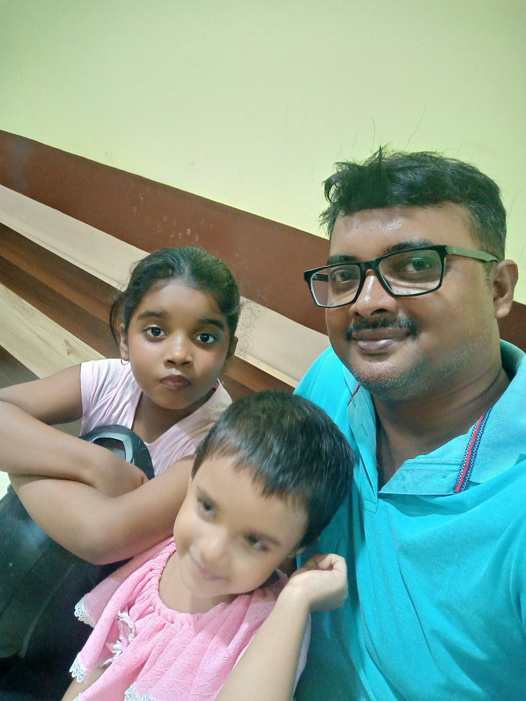

Ripan Ghosh is an aspiring software developer with a keen focus on creating effective, user-friendly solutions for cooperative societies. With a background in both Excel and SQL Server 2019, Ripan Ghosh is particularly interested in leveraging these tools to streamline data management, enhance reporting, and support better decision-making for cooperative organizations. Known for a detail-oriented approach, Ripan Ghosh is dedicated to learning and implementing solutions that improve operational efficiency and member experience within cooperatives. Passionate about the intersection of technology and community-driven initiatives, Ripan Ghosh is continuously exploring new techniques to bring added value to the cooperative sector.
